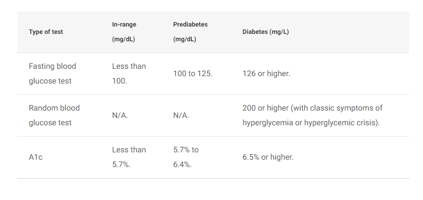

What Is Diabetes?
Diabetes is a disease that occurs when your blood glucose, also called blood sugar, is too high. Glucose is your body’s main source of energy. Your body can make glucose, but glucose also comes from the food you eat.
Insulin is a hormone made by the pancreas that helps glucose get into your cells to be used for energy. If you have diabetes, your body doesn’t make enough—or any—insulin, or doesn’t use insulin properly. Glucose then stays in your blood and doesn’t reach your cells.
Diabetes raises the risk for damage to the eyes, kidneys, nerves, and heart. Diabetes is also linked to some types of cancer. Taking steps to prevent or manage diabetes may lower your risk of developing diabetes health problems.

Types Of Diabetes
Type 1 Diabetes
If you have type 1 diabetes, your body makes little or no insulin. Your immune system attacks and destroys the cells in your pancreas that make insulin. Type 1 diabetes is usually diagnosed in children and young adults, although it can appear at any age. People with type 1 diabetes need to take insulin every day to stay alive.
Type 2 Diabetes
If you have type 2 diabetes, the cells in your body don’t use insulin properly. The pancreas may be making insulin but is not making enough insulin to keep your blood glucose level in the normal range. Type 2 diabetes is the most common type of diabetes. You are more likely to develop type 2 diabetes if you have risk factors, such as overweight or obesity, and a family history of the disease. You can develop type 2 diabetes at any age, even during childhood. You can help delay or prevent type 2 diabetes by knowing the risk factors and taking steps toward a healthier lifestyle, such as losing weight or preventing weight gain.
Gestational diabetes
Gestational Diabetes is a type of diabetes that develops during pregnancy. Most of the time, this type of diabetes goes away after the baby is born. However, if you’ve had gestational diabetes, you have a higher chance of developing type 2 diabetes later in life. Sometimes diabetes diagnosed during pregnancy is type 2 diabetes.
Prediabetes
People with prediabetes have blood glucose levels that are higher than normal but not high enough to be diagnosed with type 2 diabetes. If you have prediabetes, you have a higher risk of developing type 2 diabetes in the future. You also have a higher risk for heart disease than people with normal glucose levels.
Symptoms and Causes
What are the symptoms of diabetes?
Symptoms of diabetes include:
- Increased thirst (polydipsia) and dry mouth.
- Frequent urination.
- Fatigue.
- Blurred vision.
- Unexplained weight loss.
- Numbness or tingling in your hands or feet.
- Slow-healing sores or cuts.
- Frequent skin and/or vaginal yeast infections.

Additional details about symptoms per type of diabetes include:
Type 1 diabetes: Symptoms of T1D can develop quickly — over a few weeks or months. You may develop additional symptoms that are signs of a severe complication called diabetes-related ketoacidosis (DKA). DKA is life-threatening and requires immediate medical treatment. DKA symptoms include vomiting, stomach pains, fruity-smelling breath and labored breathing.
Type 2 diabetes and prediabetes: You may not have any symptoms at all, or you may not notice them since they develop slowly. Routine bloodwork may show a high blood sugar level before you recognize symptoms. Another possible sign of prediabetes is darkened skin on certain parts of your body (acanthosis nigricans).
Gestational diabetes: You typically won’t notice symptoms of gestational diabetes. Your healthcare provider will test you for gestational diabetes between 24 and 28 weeks of pregnancy.
What causes diabetes?
Too much glucose circulating in your bloodstream causes diabetes, regardless of the type. However, the reason why your blood glucose levels are high differs depending on the type of diabetes.
Causes of diabetes include:
- Insulin resistance: Type 2 diabetes mainly results from insulin resistance. Insulin resistance happens when cells in your muscles, fat and liver don’t respond as they should to insulin. Several factors and conditions contribute to varying degrees of insulin resistance, including obesity, lack of physical activity, diet, hormonal imbalances, genetics and certain medications.
- Autoimmune disease: Type 1 diabetes and LADA happen when your immune system attacks the insulin-producing cells in your pancreas.
- Hormonal imbalances: During pregnancy, the placenta releases hormones that cause insulin resistance. You may develop gestational diabetes if your pancreas can’t produce enough insulin to overcome the insulin resistance. Other hormone-related conditions like acromegaly and Cushing syndrome can also cause Type 2 diabetes.
- Pancreatic damage: Physical damage to your pancreas — from a condition, surgery or injury — can impact its ability to make insulin, resulting in Type 3c diabetes.
- Genetic mutations: Certain genetic mutations can cause MODY and neonatal diabetes.
Diagnosis and Tests
How is diabetes diagnosed?
Healthcare providers diagnose diabetes by checking your glucose level in a blood test.
Three tests can measure your blood glucose level:
- Fasting blood glucose test: For this test, you don’t eat or drink anything except water (fast) for at least eight hours before the test. As food can greatly affect blood sugar, this test allows your provider to see your baseline blood sugar.
- Random blood glucose test: “Random” means that you can get this test at any time, regardless of if you’ve fasted.
- A1c: This test, also called HbA1C or glycated hemoglobin test, provides your average blood glucose level over the past two to three months.
To screen for and diagnose gestational diabetes, providers order an oral glucose tolerance test.
The following test results typically indicate if you don’t have diabetes, have prediabetes or have diabetes. These values may vary slightly. In addition, healthcare providers rely on more than one test to diagnose diabetes.
Management and Treatment
How is diabetes managed?
Diabetes is a complex condition, so its management involves several strategies. In addition, diabetes affects everyone differently, so management plans are highly individualized.
The four main aspects of managing diabetes include:
- Blood Sugar Monitoring : Monitoring your blood sugar (glucose) is key to determining how well your current treatment plan is working. It gives you information on how to manage your diabetes on a daily — and sometimes even hourly — basis. You can monitor your levels with frequent checks with a glucose meter and finger stick and/or with a continuous glucose monitor (CGM). You and your healthcare provider will determine the best blood sugar range for you.
- Oral Diabetes Medications : Oral diabetes medications (taken by mouth) help manage blood sugar levels in people who have diabetes but still produce some insulin — mainly people with Type 2 diabetes and prediabetes. People with gestational diabetes may also need oral medication. There are several different types. Metformin is the most common.
- Insulin: People with Type 1 diabetes need to inject synthetic insulin to live and manage diabetes. Some people with Type 2 diabetes also require insulin. There are several different types of synthetic insulin. They each start to work at different speeds and last in your body for different lengths of time. The four main ways you can take insulin include injectable insulin with a syringe (shot), insulin pens, insulin pumps and rapid-acting inhaled insulin.
- Diet: Meal planning and choosing a healthy diet for you are key aspects of diabetes management, as food greatly impacts blood sugar. If you take insulin, counting carbs in the food and drinks you consume is a large part of management. The amount of carbs you eat determines how much insulin you need at meals. Healthy eating habits can also help you manage your weight and reduce your heart disease risk.
- Exercise: Physical activity increases insulin sensitivity (and helps reduce insulin resistance), so regular exercise is an important part of management for all people with diabetes.
Due to the increased risk for heart disease, it’s also important to maintain a healthy:
- Weight.
- Blood Pressure.
- Cholesterol.
Prevention
How can I prevent diabetes?
You can’t prevent autoimmune and genetic forms of diabetes. But there are some steps you can take to lower your risk for developing prediabetes, Type 2 diabetes and gestational diabetes, including:
- Eat a healthy diet, such as the Mediterranean diet.
- Get physically active. Aim for 30 minutes a day at least five days a week.
- Work to achieve a weight that’s healthy for you.
- Manage your stress.
- Limit alcohol intake.
- Get adequate sleep (typically 7 to 9 hours) and seek treatment for sleep disorders.
- Quit smoking.
- Take medications as directed by your healthcare provider to manage existing risk factors for heart disease.
It’s important to note that there are some diabetes risk factors you can’t change, such as your genetics/family history, age and race. Know that Type 2 diabetes is a complex condition that involves many contributing factors.